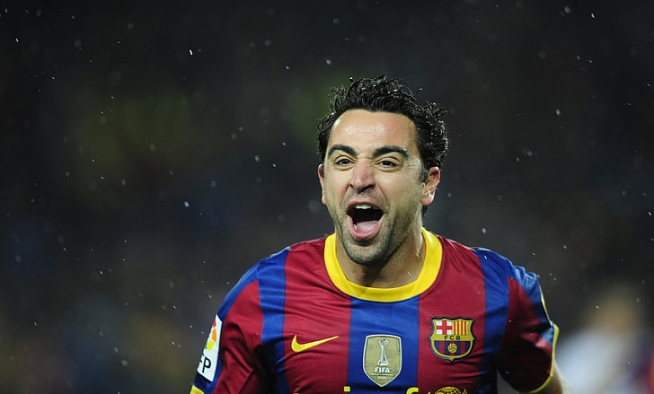

Football is played by a team of 11 players, and there are two teams playing against each other. The football is round in shape and is kicked by the players. The players are not supposed to use hands to pass the ball. The aim is to hit the goal. To play football, a lot of energy is required.
We can judge how famous the game is by seeing the crowd’s enthusiasm and craze watching a match of their favorite team playing. It is believed that the game was invented in England around the mid-19th century, but there exists controversy as the Chinese claim that they had invented the game.
There is a set of rules that a player and the team as a whole have to maintain while playing football, and the International Football Association Board formulates these rules. FIFA or Federation Internationale de Football Association organizes a football world cup every four years, and there is one of the biggest and most eagerly awaited football game.
The national football team of India had performed well under the supervision and coaching of Syed Abdul Rahim in the 1950s and the 1960s. The team also got selected for the 1950s Federation Internationale de Football Association or FIFA World Cup, but it had withdrawn before the commencement of the game.

The football lovers of India are eagerly waiting for the national team of India to take part in the FIFA World Cup and portray its skills to give a tough competition to the other teams.
otball is a game that was invented centuries ago and was named football, not just because it was played with the feet. It was still one of the games which were not played on foot and not on horseback like other popular royal games by the elite Englishmen back then.